李宏毅 ML2026 · 3/27 Positional Embedding：怎样让 Transformer 知道 Token 的顺序
Self-Attention 按直觉的讲法不看 Token 顺序：把 A、C 对调，最后一个位置的输出不变，于是「你打我」和「我打你」分不出来。这一讲按时间顺序讲一系列给 Transformer 位置信息的方法：最早的 Absolute（Sinusoidal）Positional Embedding 和它暗藏的相对位置性质；直接改 attention 的 Relative 方法 ALiBi 与 T5；如今 Llama、Qwen、Gemma 用的 RoPE；让模型「Train short, test long」的 Position Interpolation、NTK-Aware Scaling、YaRN、Dynamic Scaling、LongRoPE；最后反问「真的需要 Positional Embedding 吗」——NoPE 与先用后丢的 DroPE。页面依据官方 pos.pdf（64 页）和课程影片字幕（90 分钟）。
课程网站 课件 pos.pdf 课程影片 RoPE 论文（arXiv 2104.09864） RoPE 越远越小？（arXiv 2410.06205） 本页导读约 30 分钟
字幕取自课程影片的 zh-TW 字幕，按分钟合并，引用写作「口述 mm:ss」；字幕是 ASR 文字，个别字词可能有误，本页不静默纠正，只在理解需要时注明。
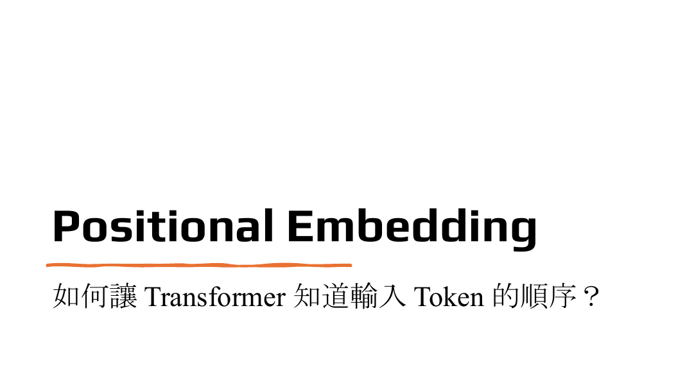
口述 00:00–01:01：大型语言模型背后的 Transformer 输入一串 Token、预测下一个 Token；Token 先变成 Embedding（每个 Token 一个向量），送进每层都有的 Self-Attention 模块。Self-Attention 输入一排 Token、吐出数目一样的一排；以 4 个 Token 的 Embedding XA 到 XD 为例，只看最右边位置的输出 OD：每个 Embedding 分别乘 3 个矩阵得到 Q、K、V。
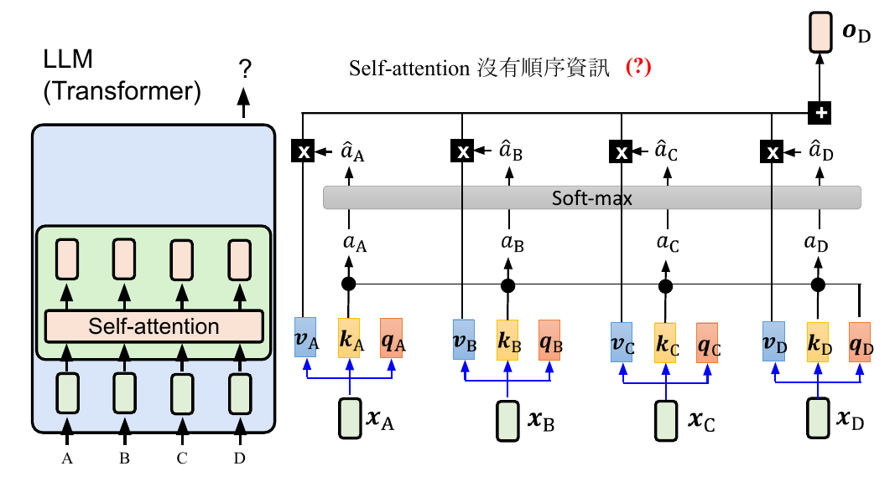
口述 02:00–03:02：D 的 query 和每个 Token 的 key 做内积得到 attention weight，做 Softmax 归一化，再对每个 Token 的 value 做 weighted sum 得到 OD——过程中没有顺序信息。讲者说标题上偷偷打了问号，因为「Self-Attention 没有顺序信息」是常见的传统讲法，课程尾声会告诉你它其实偷偷藏了位置信息。先按直觉讲：把 A 和 C 对调、输入变成 CBAD，对 OD 完全没影响，因为 Q、K、V 和 attention 跟着对调，而 weighted sum 先加谁都一样。
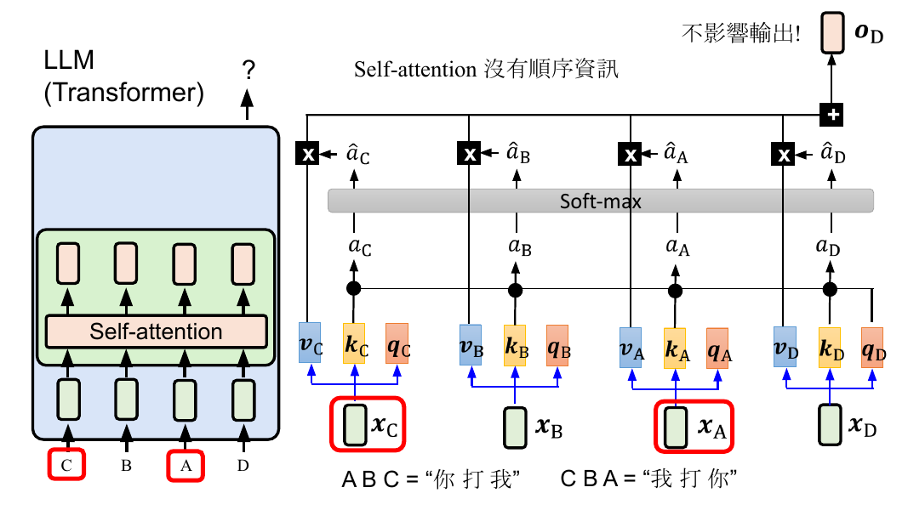
口述 04:01：这会造成很严重的问题，因为 Token 顺序对理解句子非常重要——ABC 是「你打我」，CBA 就成了「我打你」，意思完全不同，最后一个位置算出的 Embedding 却一样，模型分辨不了。所以要给 Transformer 位置的信息，这堂课就是探讨一系列这样的方法，从最早的 Absolute Positional Embedding 讲起。
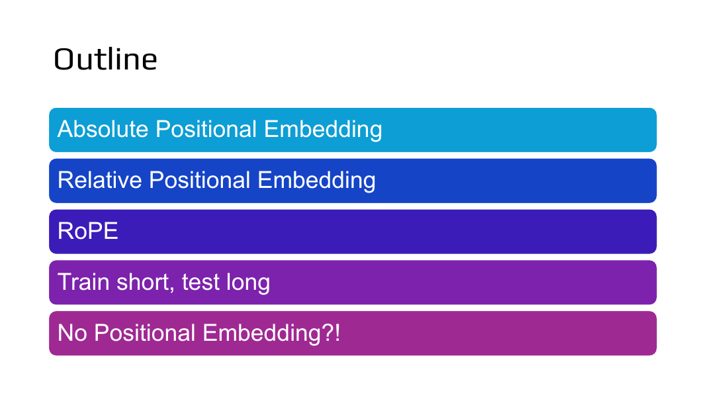
每两维是一根转速不同的指针
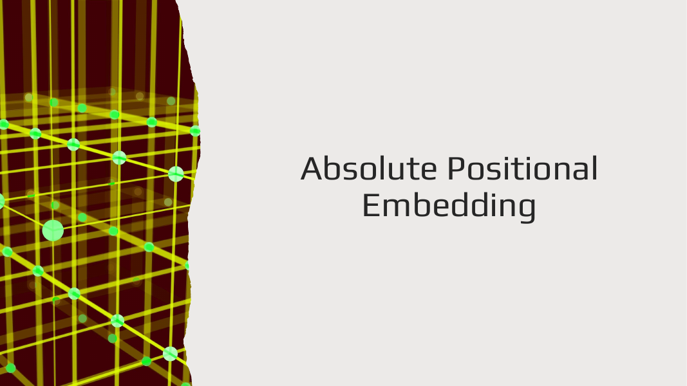
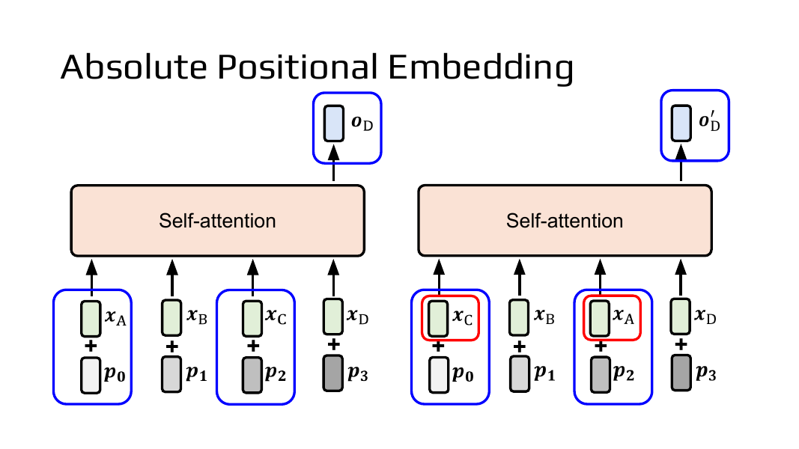
口述 05:01–06:02：做法是为每个位置设计一个特别的 Embedding（P0 到 P3 对应位置 0、1、2、3），把这个向量加到 Token 上。同一个 XA 放在位置 0 和位置 2，加的位置 Embedding 不同，Self-Attention 看到的就是「放在位置 0 的 XA」和「放在位置 2 的 XA」，输出也就不同。最通用的是 Sinusoidal Positional Embedding，Transformer 最初诞生时就用它——讲者说「在寒武纪的时代」就有了。
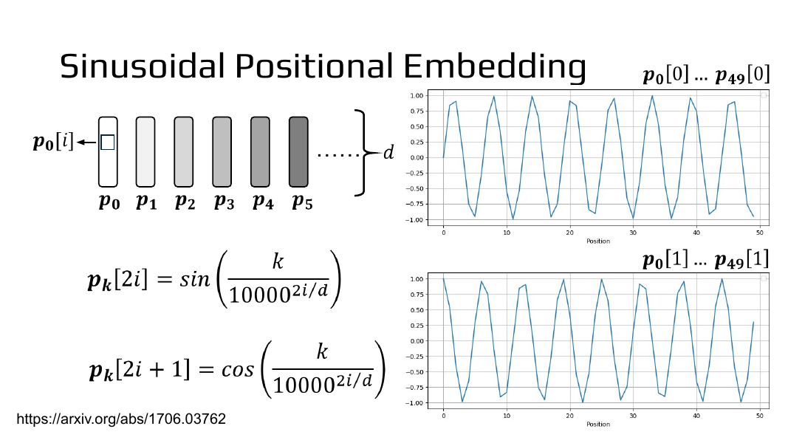
口述 07:02–09:00：d 是 Embedding 长度，可以自己定，例如 128、256；Pk[i] 表示向量 Pk 的第 i 个数。偶数维用 sine、奇数维用 cosine，两者角度相同：分子是 k（第几个位置，k 越大角度越大），分母是 10000 的 2i/d 次方，i 表示第几维，所以不同维的角度大小不同，d 是固定的 Embedding 维度。讲者说这乍看非常离奇，之后会解释为什么这样设计；先把 P0 到 P49 的第 0 维（从 0 开始数，其实是第 1 个维度）拿出来看，就是一条 sine 曲线。
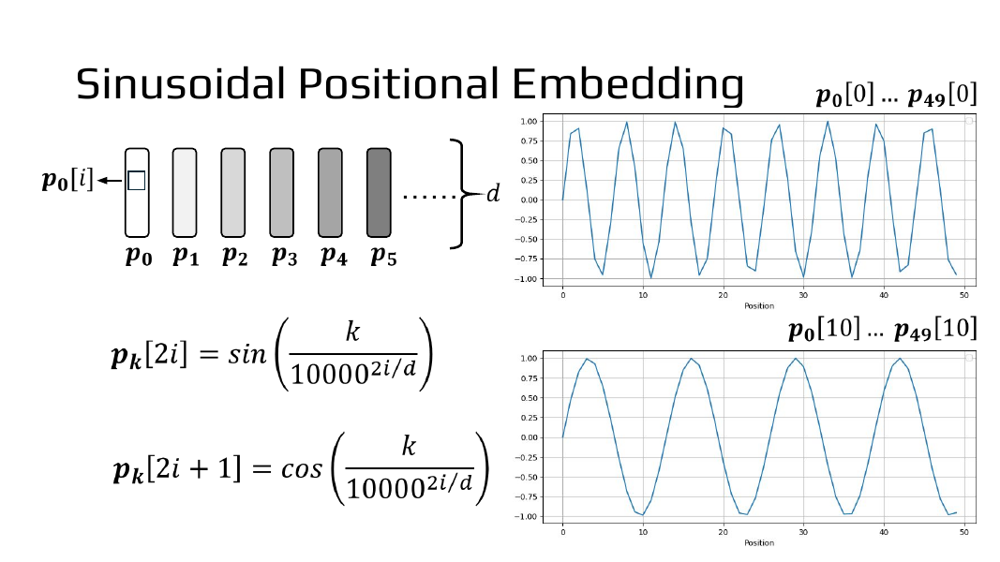
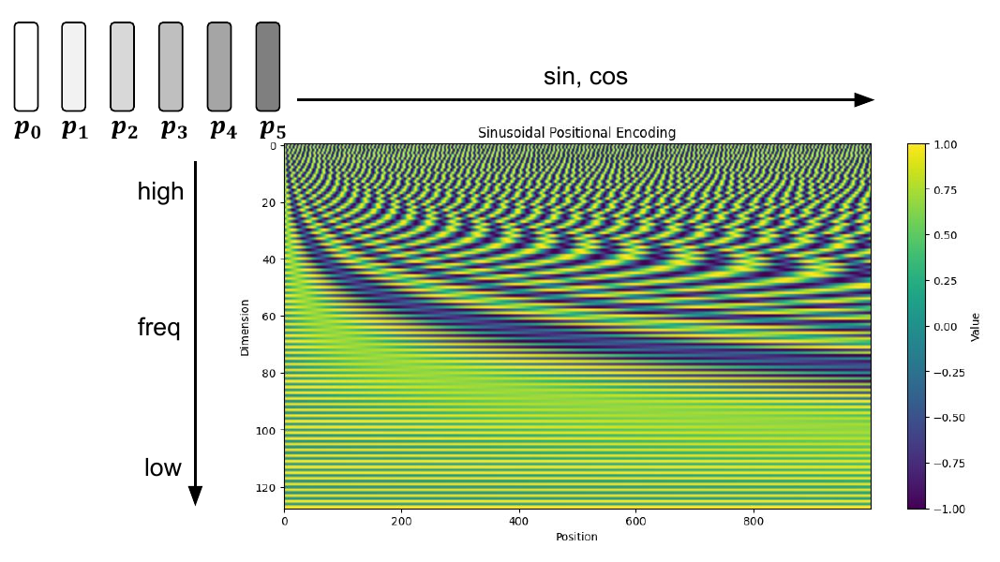
口述 10:01–12:01：编号 1 的维度（第 2 个维度）是奇数，所以是 cosine；看编号 10 的维度（第 11 维）也是 sine，只是周期和编号 0 的不同，因为分母里 i 不同。把 Embedding 全排到 1000 画出来，就像一张神秘的 3D 图；数值只会落在 1 和 -1 之间，偶数行是 sine、奇数行是 cosine，所以有很多深浅交错的斑纹；接近 0 的维度频率较大、数值变化剧烈，编号大的维度变化非常缓慢。
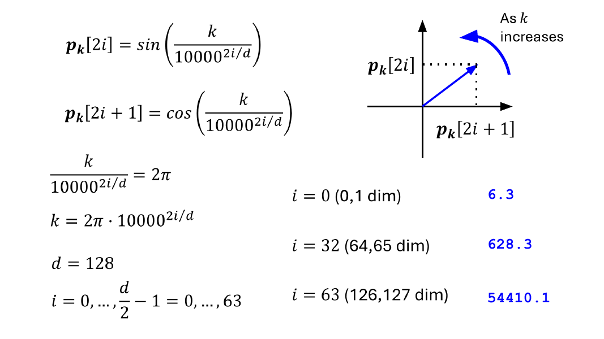
口述 13:00–15:00：偶数维和奇数维合起来是一对，一个 sine 一个 cosine、角度一样，所以第 2i 维和第 2i+1 维可以看成二维平面上的一根指针，k 每加 1 就转一下。三角函数周期是 2π，所以转一圈需要 k = 2π 乘 10000 的 2i/d 次方。设 d 是 128，i 从 0 到 63，最大的维度编号是 2 乘 63 加 1，也就是 127。算下来：第 0、1 维约 6.3 个 k 转一圈；i 等于 32（第 64、65 维）约 628.3 个 k；i 等于 63（第 126、127 维）转得最慢，要 54000 多个 k。
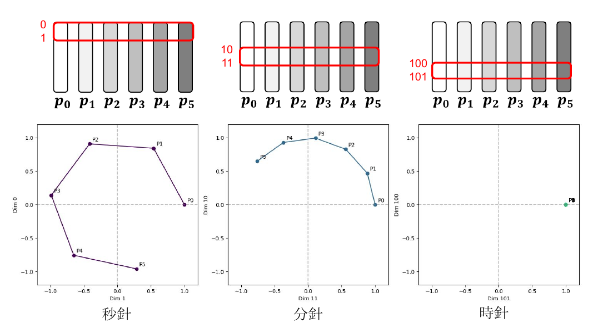
口述 15:00–17:01：所以 Transformer 看到的位置信息是：最前面两维是走得非常快的指针，约 6.3 个 Token 一圈；中间如第 10、11 维慢一些；第 100 到 101 维的指针在前 6 个 Token 几乎不动。时钟只有 3 根指针，这里有多少根看维度——128 维就有 64 根转速都不同的指针，希望 Self-Attention 看着这 64 根指针知道现在在哪个位置。（补充：口述此处说「转得慢的是秒针、转得快的是时针」，与课件把最快的第 0、1 维标为秒针相反，应是口误，以课件为准。）讲者接着问：表示位置的方法很多，2017 年深度学习刚诞生的「寒武纪」时代，Transformer 的作者为什么选这种做法？要「赞叹先人的智慧」。
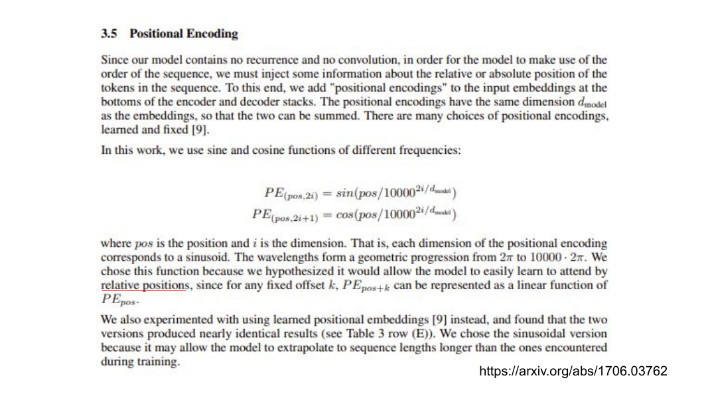
位置 k 到 k+r 只差一个与 k 无关的矩阵
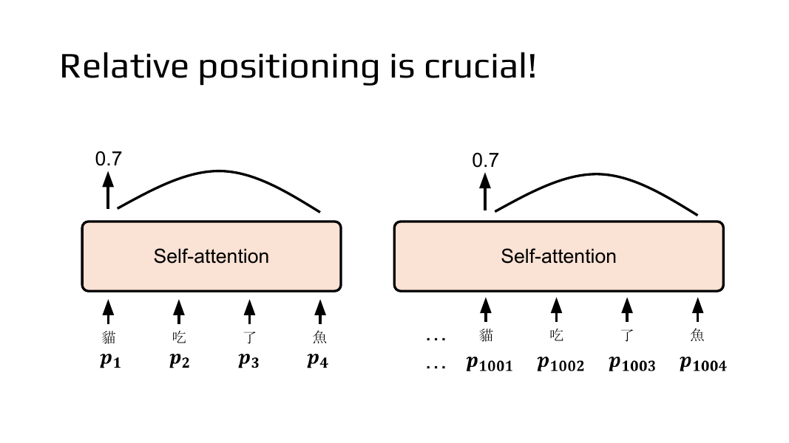
口述 17:01–19:01：原论文正文只有一句，微言大义：选法很多，但希望 位置编码 能考虑 relative position。例如「猫吃了鱼」，鱼要跨过两个 Token attend 到猫，分数 0.7；就算在前面硬插 1000 个 Token（比如这是长篇小说的一部分），猫吃了鱼仍是固定事件，希望算出的 attention 还是 0.7。真正最重要的是相对信息——某个 Token 和另一个 Token 距离多远；绝对位置甚至没那么重要。
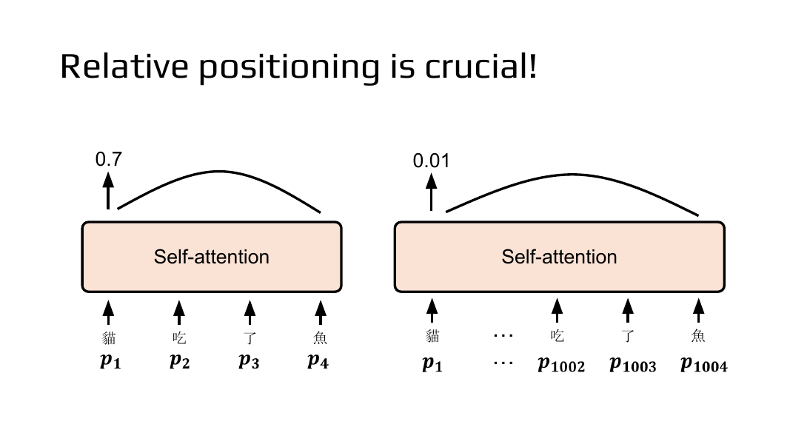
口述 19:01：另一方面，若猫在句首、鱼在句尾，虽然符号一样，距离很远，就希望 attention 小一点。作者选 Sinusoidal 是因为它有一些特殊性质，似乎对 Relative Position 有帮助：用 Pk 表示第 k 个位置的 位置编码、Pk+r 表示第 k+r 个位置的。
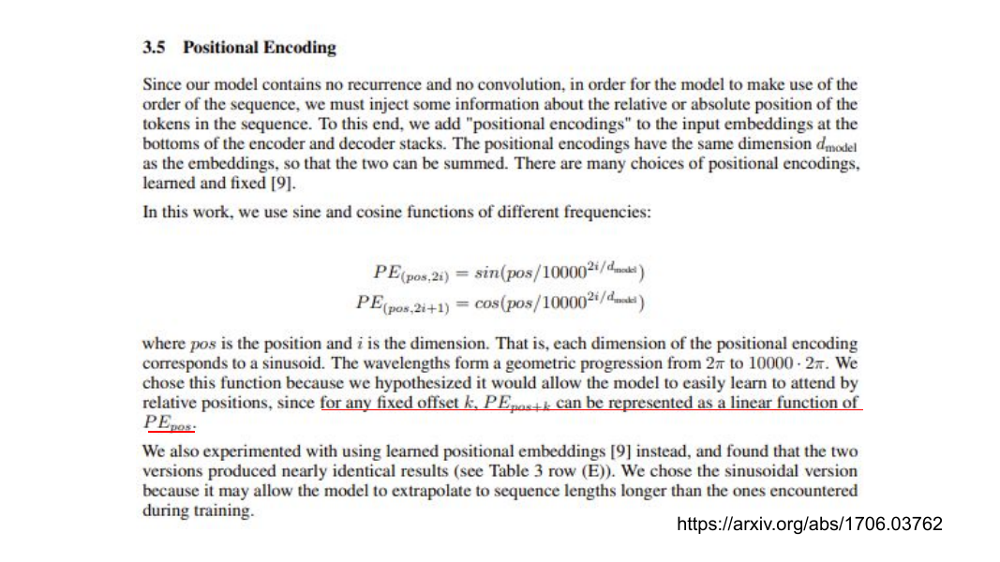
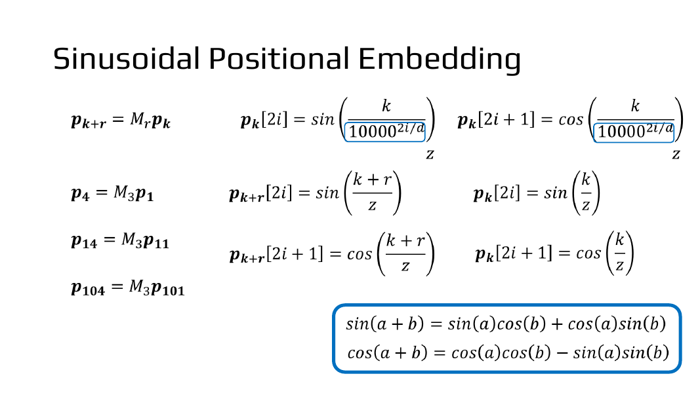
口述 20:03–21:00：把 Pk 乘上一个只跟距离 R 有关、跟 k 无关的矩阵 M_R，就得到 Pk+R：P1 乘 M3 是 P4，P11 乘 M3 是 P14，P101 乘 M3 是 P104，两个 位置编码 的关系只跟相对位置有关。为了计算方便，把分母 10000 的 2i/d 次方记作 Z（注意 Z 里含 i）；再用高中学过的三角函数和角公式展开 Pk+R。
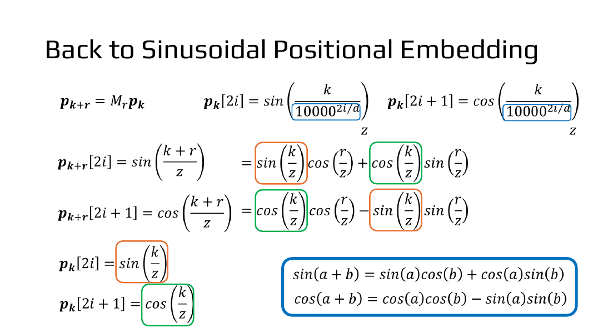
口述 22:01–23:01：展开后会发现里面的 sin k/Z、cos k/Z 正是 Pk 的第 2i 维和第 2i+1 维，于是可以代回去：Pk+R 的第 2i 维等于 Pk 的第 2i 维乘 cos(R/Z)——这一项只跟相对距离有关——加上 Pk 的第 2i+1 维乘 sin(R/Z)；第 2i+1 维同理。写成更紧凑的形式，就是把两维合成一个向量，乘上由 cos、sin、负 sin 组成的矩阵。（口述里和角公式的「減 Sin A 減 Sin B」是 ASR 字幕，课件写的是 − sin(a)sin(b)。）
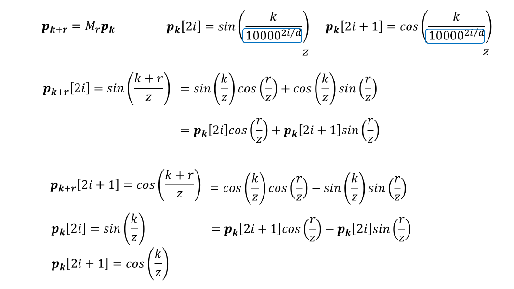
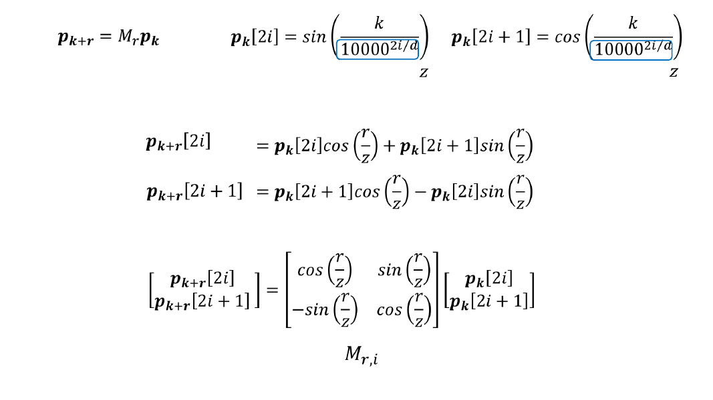
口述 24:01：这个矩阵只跟 R（两个位置的相对距离）有关，跟绝对位置 k 没关联，记作 M_R；但它也跟 i 有关，因为 Z 是 10000 的 2i/d 次方，所以不同维度的矩阵不一样。完整的 Pk+R 和 Pk 之间就差乘上一个 M_R。
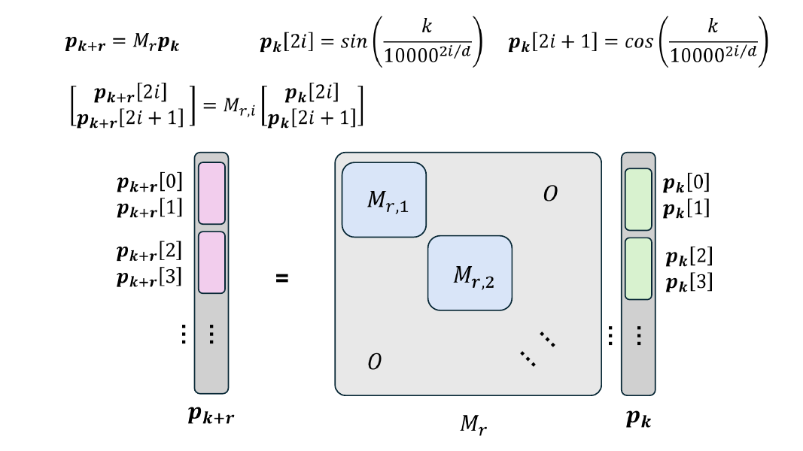
口述 25:00：M_R 就是在对角线上从左上角开始依次放 M_R,1、M_R,2、M_R,3……，其余放 0；PK_0、PK_1 乘 M_R,1 得到 Pk+R 的 0、1 维，PK_2、PK_3 乘 M_R,2 得到 2、3 维，与绝对位置无关。接着看这个巧妙设计对算 Self-attention 的影响：XA、XB 分别加上位置 Embedding P_N、P_M。
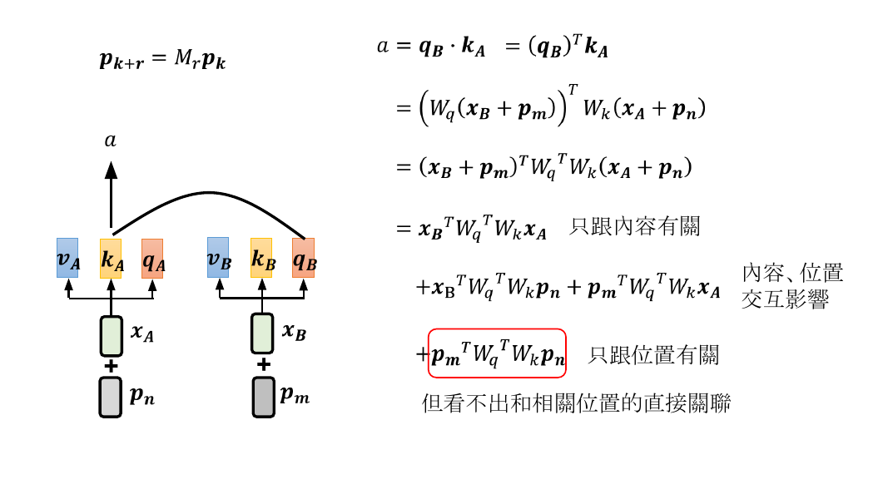
口述 26:01–28:00：attention 是 B 的 query 和 A 的 key 做内积；QB 是 Token Embedding 加位置 Embedding 再乘矩阵，KA 同理。展开后共 4 项：第一项 XB 转置乘 WQ 乘 WK 乘 XA 只跟内容有关，不考虑相对位置；中间是内容和位置交互影响的项，很复杂，暂不考虑；最后一项只跟位置有关，是位置 Embedding 乘 WQ、WK 再乘另一个位置 Embedding。但单这样写看不出和相对位置的关系——如果随便设一组位置 Embedding，它并不会考虑相对位置。
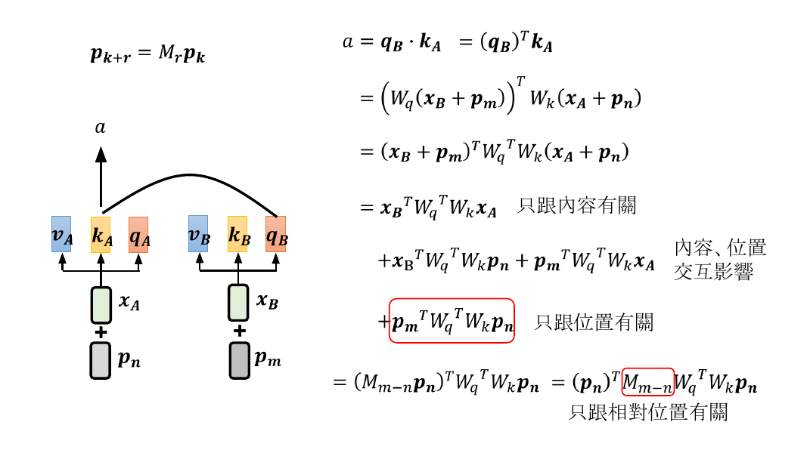
口述 29:01：正因为 Sinusoidal 有 Pk+R 等于 M_R 乘 Pk 的性质，可以把 PM 换成 PN 乘上下标为 M−N 的矩阵（M−N 是两个位置的相对距离），于是出现一项跟相对位置有关、被加进 attention。但这一项并不纯粹，还混着绝对位置等其他东西，影响很间接。这是 Absolute Positional Embedding；接下来进入 Relative Positional Embedding 的时代。
距离越远 attention 越小，就这样
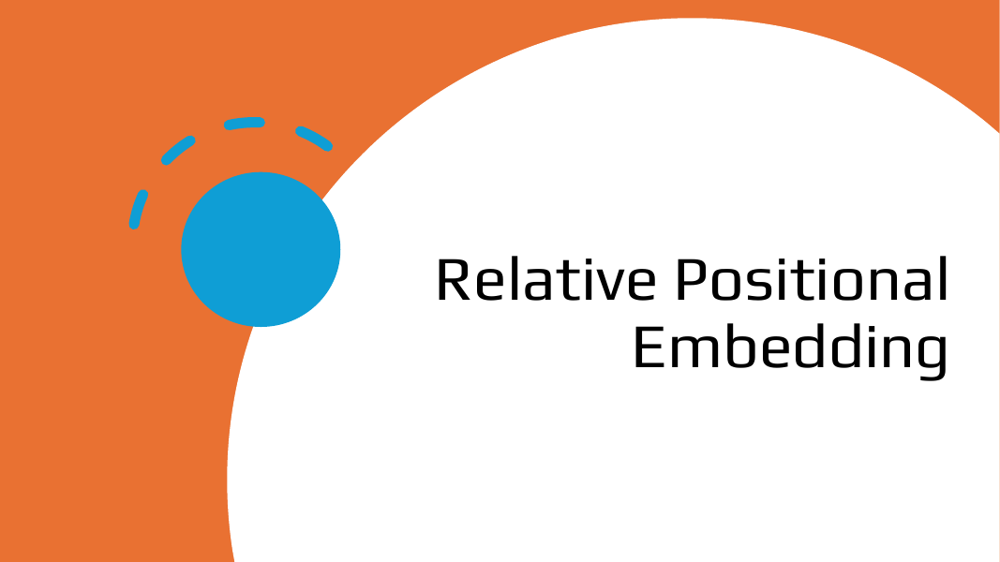
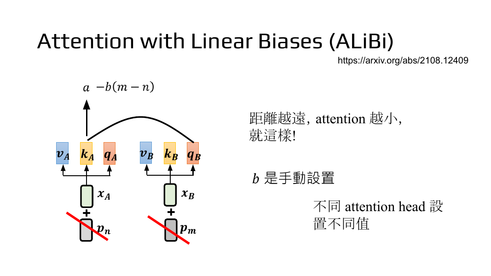
口述 30:03–31:02：既然想把相对信息加进 attention，何必拐弯抹角设计 Absolute Positional Embedding？ALiBi 直接根据相对位置改 attention。讲者说听过原论文作者演讲，念法是 ALiBi，alibi 这个词本义是「不在场证明」。做法：丢掉 位置编码，先在不考虑位置时算出 attention，再减去常数 B 乘以两个位置的距离 M−N，效果就是距离越远 attention 越小。B 手动设一个喜欢的数，比如 0.5 或 1；一层 Self-attention 往往有多组 attention head，可以给不同的 B。
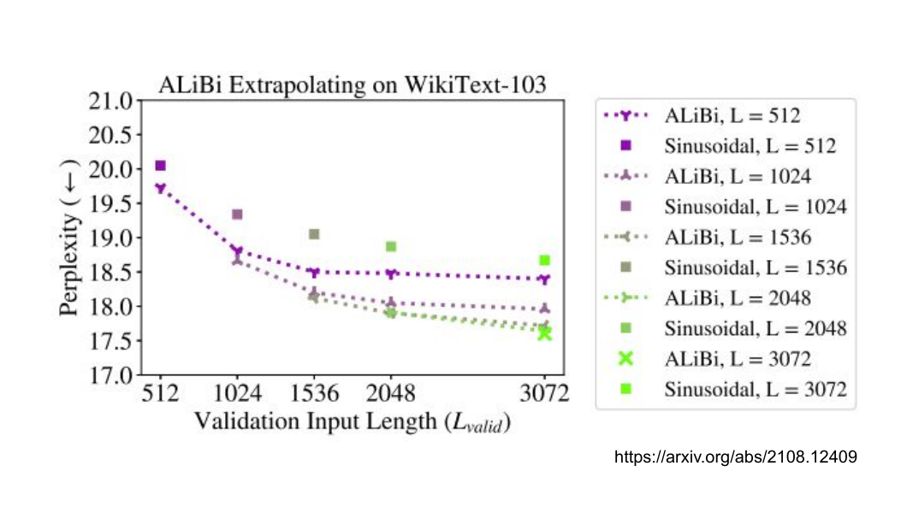
口述 32:01–33:02：有些 head attend 远处、有些 attend 近处；原论文的 B 就凭直觉手动给。神奇的是结果非常好。横轴输入长度最长做到 3072——今天看很短，但这是 2021 年、讲者说的「奥陶纪」的文章，当时三千多个 Token 已算长；纵轴是 Perplexity，越低越好。方点是 Sinusoidal，越往右代表用越长的序列训练；紫色线是只在 512 个 Token 上训练的 ALiBi，却能用在更长的序列上，还比 Sinusoidal 好。
口述 34:03：直接训练在更长序列上会更好；ALiBi 全面碾压 Sinusoidal，就算训练在短序列上也能外推，超过 Sinusoidal 直接在长序列上训练的结果。那 B 若用学的会不会更好？早在 ALiBi 之前就有人学相对位置的 Bias，这里引用 T5——2019 年的文章。
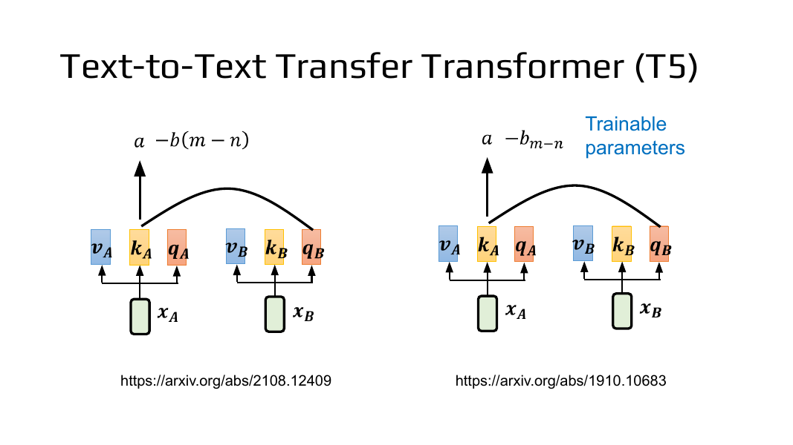
口述 35:00–36:00：T5 减去的 Bias 跟距离 M、N 有关，是从训练数据学出来的，按区间设值（讲者说不是精确数字，大致如 0 到 5 一个值、5 到 10 一个值、10 到 20 一个值、超过 20 一个值）。效果比 ALiBi 差——人手设的数值比当时训练出来的还好；可训练的相对位置 Bias 是 2019 年就有的东西。ALiBi 后来也消失在历史洪流中，被更强的方法取代，但它的启示是 Relative Position 真的很重要。
内积只取决于旋转角度之差，而且不改变 attention 的算法
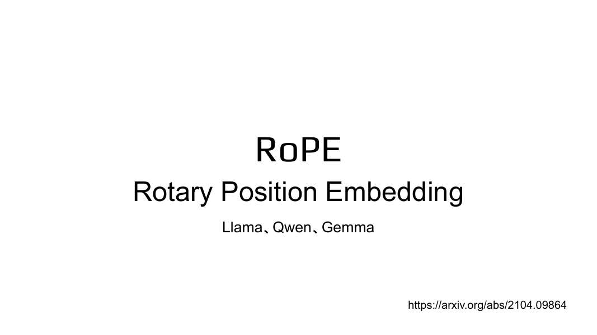
口述 36:00–37:00：RoPE 是 Rotary Positional Embedding 的缩写，其实比 ALiBi 更早出来，ALiBi 的论文里好几处实验还赢过 RoPE，但历史选择了 RoPE，用在 LLaMA、Qwen、Gemma 等知名模型。结论先讲：在 Q 和 K 做 Dot product 之前，先把位置信息加到 K 和 Q 上——说「加」不精确，是通过旋转这两个向量来加入。
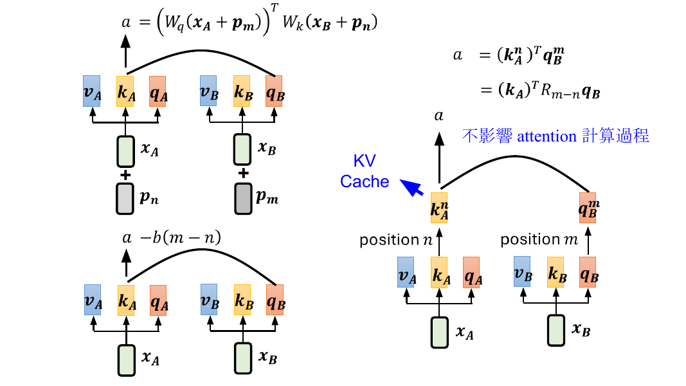
口述 38:02–40:01：上标 N 表示带了位置 N 信息的 K。RoPE 的效果是：带位置的 Q 和 K 算出的 attention，等于原来的 Q 乘上一个只跟两个 Token 相对位置有关的矩阵、再乘 A 的 Key——把相对位置用很直接的方式塞进 attention weight。它很强的一点是不影响计算过程：ALiBi 算出 attention 后还多一步，RoPE 完全不动原来 attention 的操作，只是 Q、K 不同，所以之前学的 Flash Attention、KV Cache 都能直接套用；做 KV Cache 时直接把 K 上标 N 存进 Cache，而不是存没加位置的 K、读出来再加。
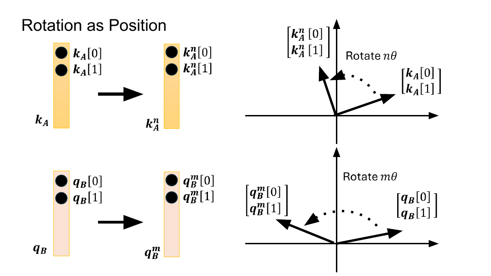
口述 41:00–42:00：只看 K 的前两维，它是二维平面上的向量；加入位置 N 就是把它旋转 N 乘 θ 的角度，得到 K 上标 N 的第 0、第 1 个数值；Q 同样旋转 Mθ。RoPE 把旋转角度当作位置信息，而且每两个维度一组，跟 Sinusoidal 的「每两维是一根指针」是同样的概念；看完前两维，接下来看第 3、第 4 个维度（index 是 2 和 3），用另一个角度旋转。
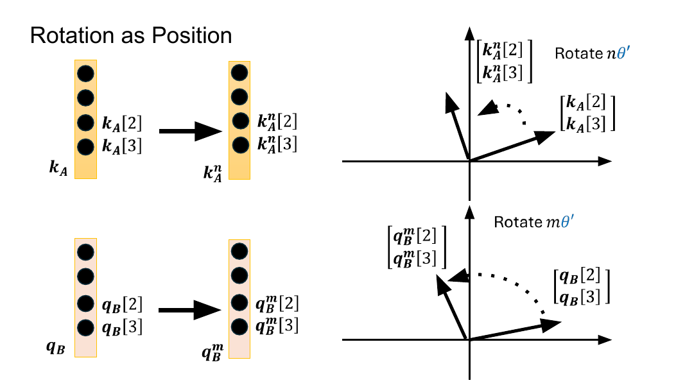
口述 43:02：第 3、4 维（index 2 和 3）用另一个不同的角度 θ′ 旋转，同样乘上位置：K 转 Nθ′，Q 转 M 乘 θ′。
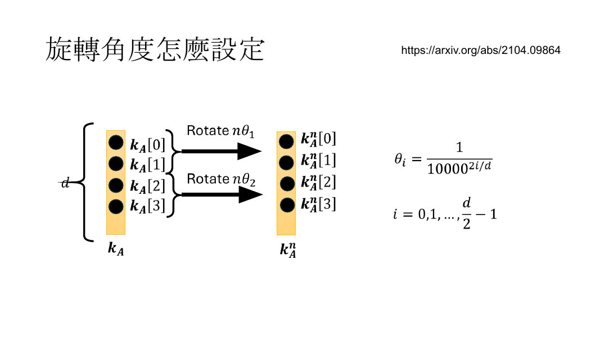
口述 43:02–44:02：用下标 i 表示不同的角度，θi 的设计跟 Sinusoidal 非常类似，等于 1 除以 1 万的 2i/d 次方；不一定要设 1 万，原论文 follow Sinusoidal 设成 1 万，后来不同模型设不同的值。需要 d/2 个 θ，例如 d 是 128 就要 64 个不同的 θ。（字幕此处说「i 是 0、1 一直到 2d−1」，与课件 i = 0…d/2 − 1 不同，以课件为准。）效果：Q 和 K 都往后移 r 个位置、相对位置不变时，attention 数值不变。
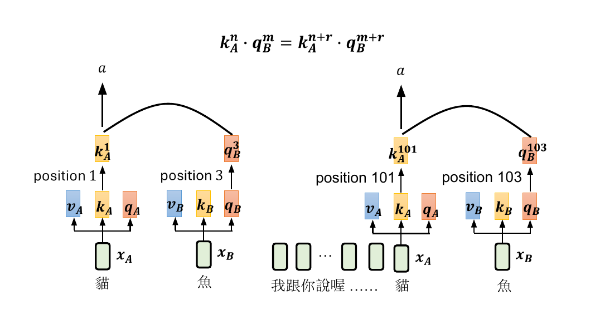
口述 45:00：猫在第 1 个位置、鱼在第 3 个位置，猫的 key 旋转加上位置 1，鱼的 query 加上位置 3，算出 attention A；在前面加大量无关 Token，让猫在 101、鱼在 103，算出的 attention 与在 1、3 时一样。
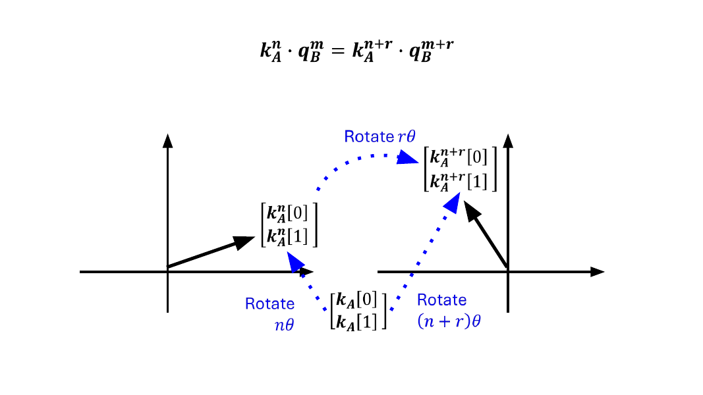
口述 46:02–47:01：原来的 key 旋转 Nθ 到一处，放到 N+r 时旋转 (N+r)θ 到另一处，两者夹角是 rθ；Q 也一样。把两个向量都再转同样的角度 rθ，不会改变它们的内积，所以 K 上标 N、Q 上标 N 和 K 上标 N+r、Q 上标 N+r 算出的 attention 一样。
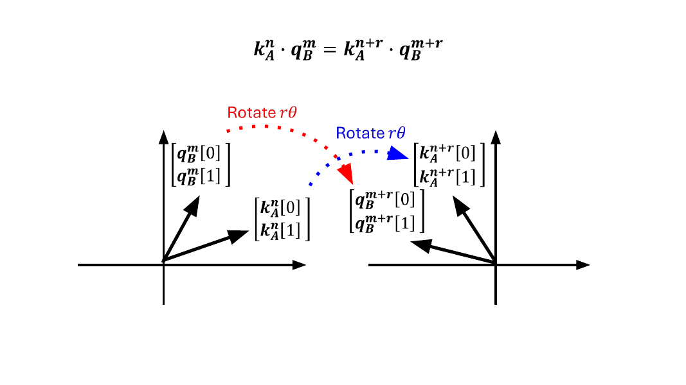
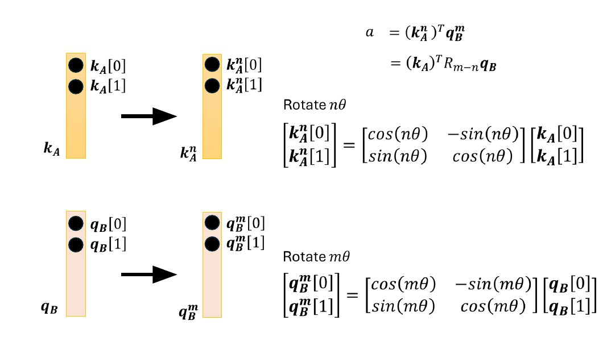
口述 48:01–49:00：第 N 个位置的 K 和 Q 做 attention，等同于不带位置的 Q 乘上一个只跟两者距离有关的矩阵、再乘 K 的转置。以前两维为例：K 的前两维乘上「旋转 Nθ」的矩阵就是 K 上标 N——旋转可以表示成矩阵乘向量，这是线性代数学过的；Q 则乘旋转 Mθ 的矩阵。把两个向量做 inner product、代入后上标消失，位置信息全在旋转矩阵里。
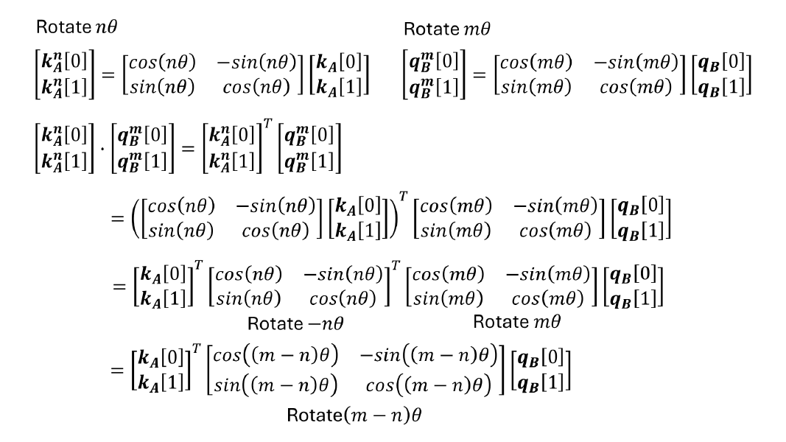
口述 50:04：旋转矩阵的转置代表反方向旋转，所以「旋转 Mθ」和「旋转负 Nθ」相乘合起来就是旋转 (M−N)θ。加上位置信息，等同于把 Q 旋转 (M−N)θ 再乘 K。
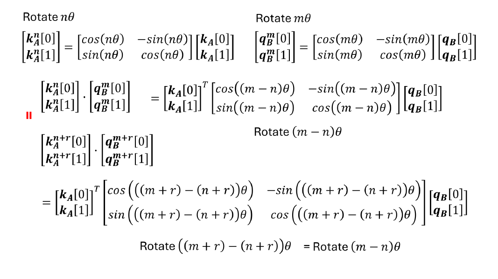
口述 51:03–52:01：把 M 换成 M+r、N 换成 N+r，中间的旋转变成 (M+r)−(N+r)，还是 (M−N)θ，所以两个 attention 一模一样。那为什么不直接让 Q 自己旋转 R 再和每个 K 做 attention？讲者请大家想想：左边（K、Q 各自旋转）和原来的 attention 一模一样，可以把带位置的 K 存进 KV Cache；右边 Q 和不同的 K 做 attention 时要乘不同的 R，运算比较没效率。所以两者等价，实际采用左边。
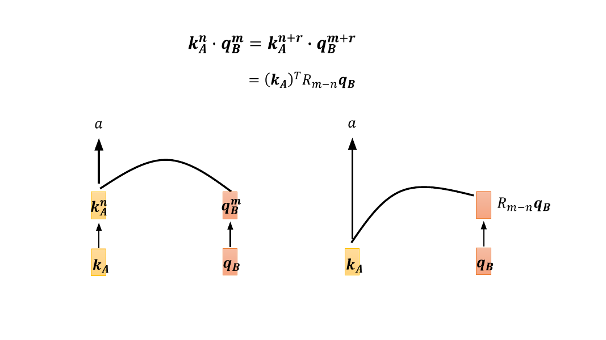
口述 53:01：左边的做法和原来的 attention 一样，通常跟各种加速方法相容，这是 RoPE 流行的原因之一。讲者说方法流行常有天时地利，不见得最强，而是最能和别人搭配。
不保证；这反而让它能做出更细的 attention
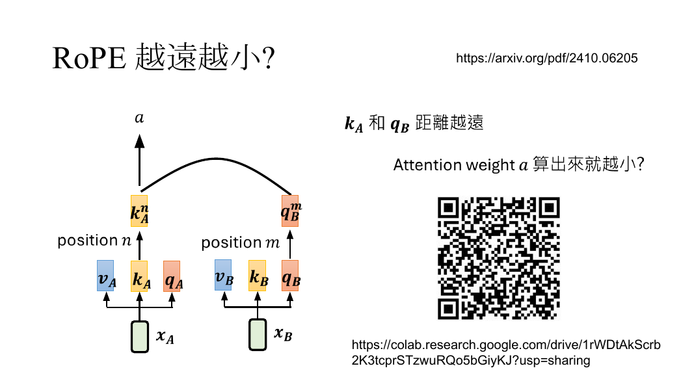
口述 53:01–54:03：很多人误以为 RoPE 还有「Q、K 距离越远 attention 越小」的特性，像 ALiBi 一样；RoPE 其实没有保证这件事，讲者用 Colab 小程序说明。第一个 block 是把 RoPE 加到向量上：输入向量 X 和位置 M，每两维一组、按各自角度旋转，角度取决于维度和位置。
口述 55:01–56:01：第二个函数给定 Q、K，K 固定在位置 0（用 apply_rope 得到 K_rope），Q 的位置 M 从 0 到 Max Distance−1，每个都和 K 算 dot product 并记录，看 Q 离 K 越远 attention 是否越小。实验设 D 是 128、Max Distance 到 500，Q、K 随机产生；纵轴是没 normalize 的 attention，所以不在 0 到 1 之间；结果上上下下，没有越远越小。
口述 57:01–58:01：Q、K 随机，每次结果不同，但没有固定变小的趋势。若 Q、K 一模一样（向量全是 1），角度差越多 attention 确实大体下降，但不是严格递减，有神秘的锯齿——因为不同维度转速不同，很多维度在 0 到 500 内已转了好多圈，转回来角度不增反减。所以 RoPE 不保证距离越大 attention 越小，那是误解；但这不一定是坏事，RoPE 能做到 ALiBi 做不到的事。
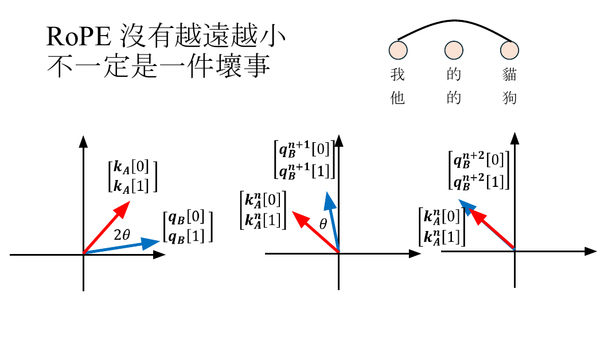
口述 59:03–60:02：例如希望一个 Token 跳过前一个、只看前面第 2 个 token——「我的猫」重要的是猫是谁的，而不是「的」；ALiBi 越远一定越小，做不到。RoPE 中若 Q、K 本来差两个 θ，Q 领先 K 1 步（Q 在位置 N+1、K 在位置 N）就差一个 θ，领先两步角度差为 0、attention 反而较大，于是可以做出「两个字之前 attention 最大、前一个字较小」的复杂 pattern。这是 RoPE 相较于 ALiBi 的一个优势。
没见过的旋转角度会让模型「发疯」，就把位置编号压缩
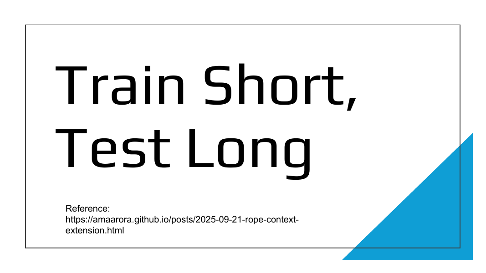
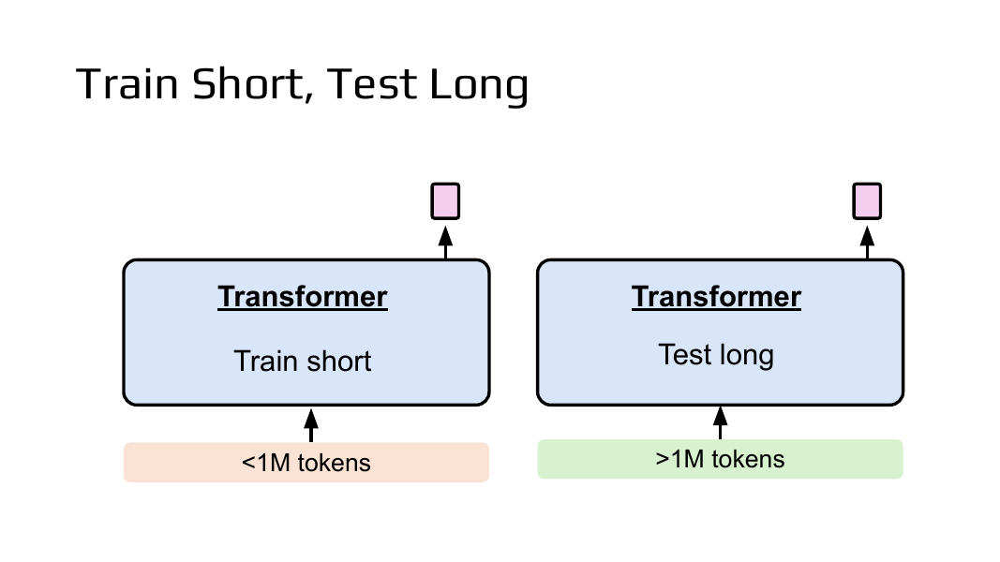
口述 60:02–61:00：Train Short Test Long 讲得比较简略，想了解更多可看课件上的博客。目标是训练时只看过较短的序列，测试时给很长的也不坏。这对实际应用很有帮助：训练能给的长度总有限制，序列越长训练负担越大，有时也找不到够多的长语料；但用 agent 时，我们期待它永无止境地运作下去，需要非常长的 context window。
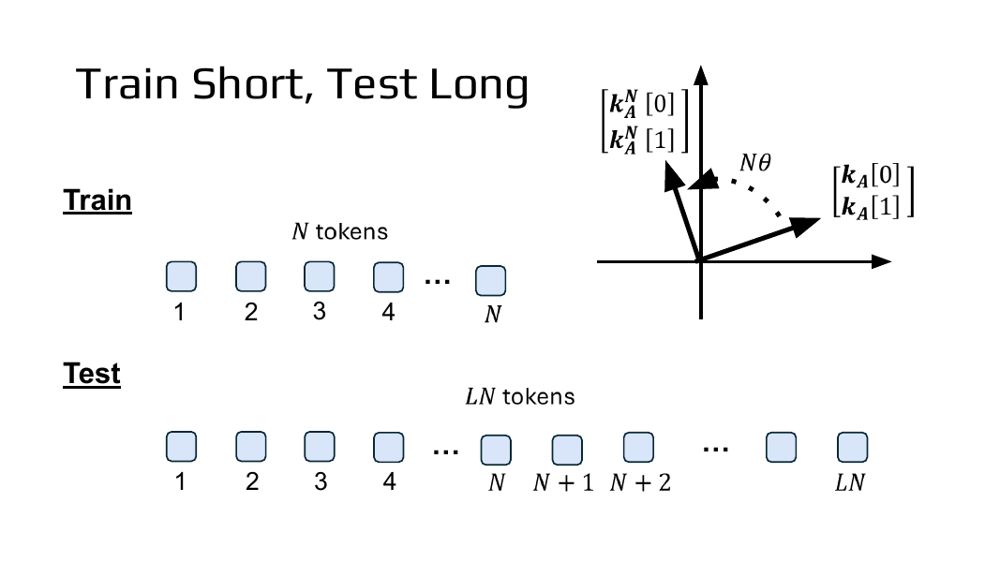
口述 62:00：直觉做法：训练最多看过 N 个 Token、位置编号到 N；测试要处理 L 倍长的序列，就直接把超过 N 的位置编成 N+1、N+2 一直到 LN，看模型能否运作。RoPE 看起来不行：左图所有模型训练在 512 个 Token、右图训练在 1024 个 Token，测试时给非常长的输入。
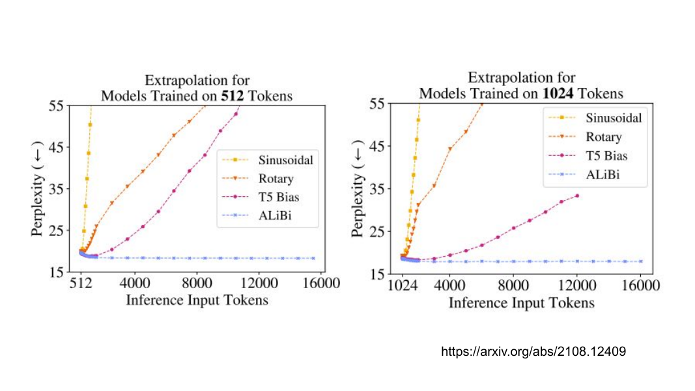
口述 63:01：Sinusoidal 序列一长整个坏掉；rotary（就是 RoPE）好一点但也逐渐崩坏（Perplexity 越小越好）；有学 bias 的 T5 也逐渐崩坏；只有 ALiBi 撑得住——它按既定规则人设，非常 robust，但比较简单。所以后人想调整 RoPE 让它做到 Train short test long。第一个问题是为什么 RoPE 在没见过的长序列上会失败。
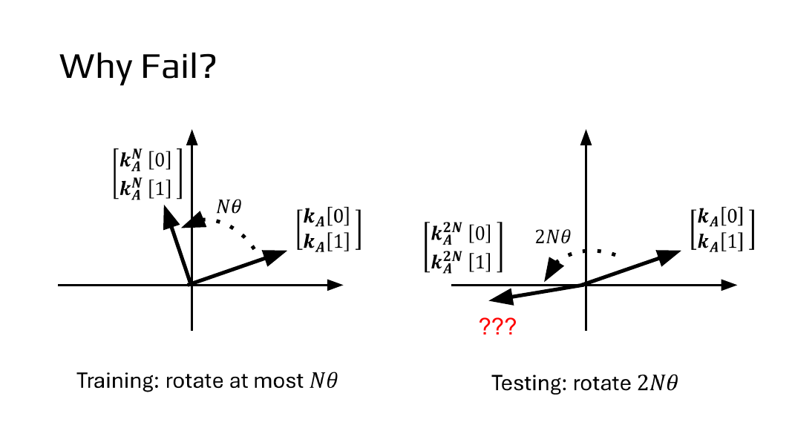
口述 64:02：训练时最长 N，最大旋转角就是 N 乘 θ；推理时硬给 2 倍 N 长的序列，RoPE 从没见过向量被转到那里，就发疯了。过去文献发现超过训练长度时模型不只是表现差，而是整个爛掉，因为这是训练时从没见过的状况。办法：不要给它超过 N 的旋转角度。
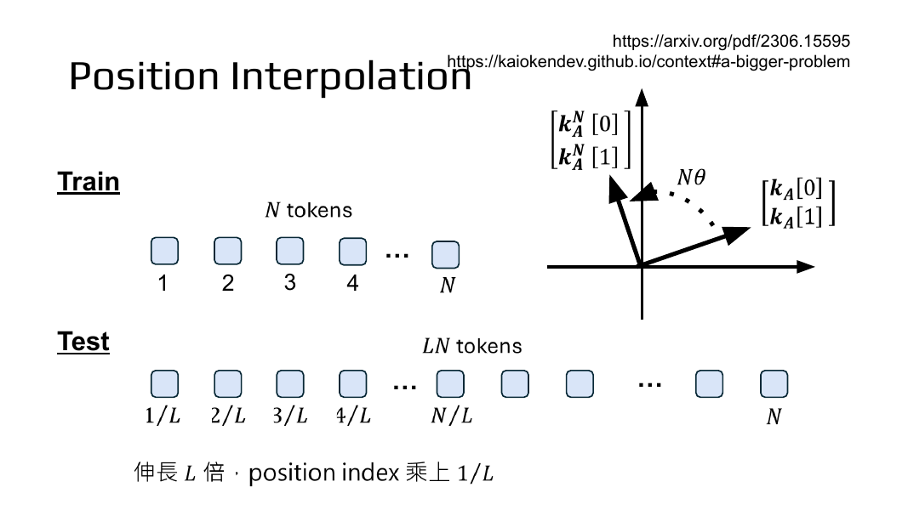
口述 65:03–66:00：Token 的编号不必是整数：把 L 乘 N 长的序列所有位置都除以 L，第 1 个是 1/L、第 2 个是 2/L……最大编号仍只到 N。没人规定编号一定是整数，例如训练 N、推理 2N，第 1 个位置就是 0.5，就旋转 0.5θ；1.5 就旋转 1.5θ，最终不超过 Nθ，都是训练见过的情境。这叫 position interpolation（位置内插）。
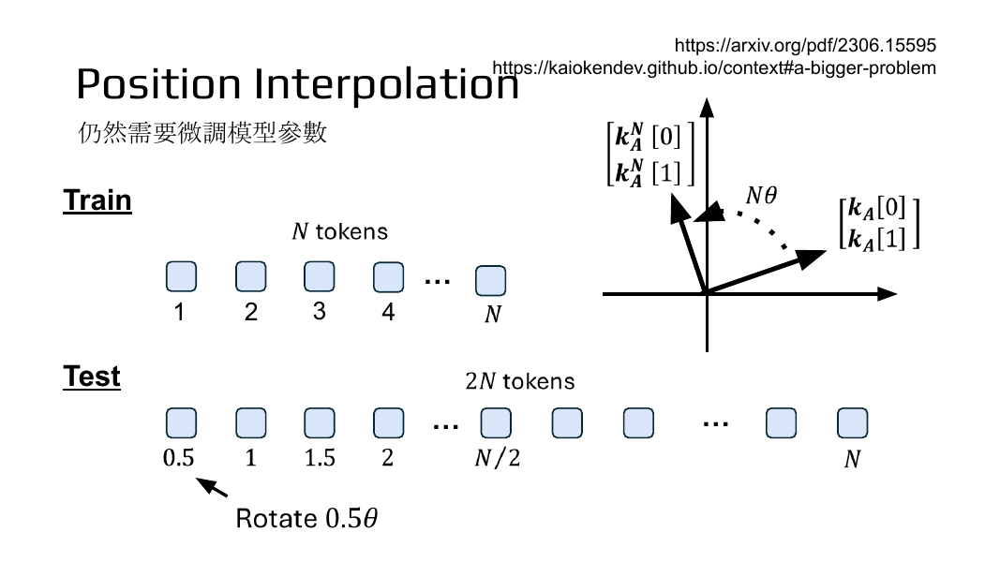
口述 67:01：效果有一定程度，但模型仍要针对非整数位置略微微调才行，不能 zero-shot 直接把位置设成小数；只是避免另找大量资料训练。它不一定带来非常好的表现，于是有一系列 frequency-based 方法。
高频的指针可以不动，低频的才压缩；短序列不压缩
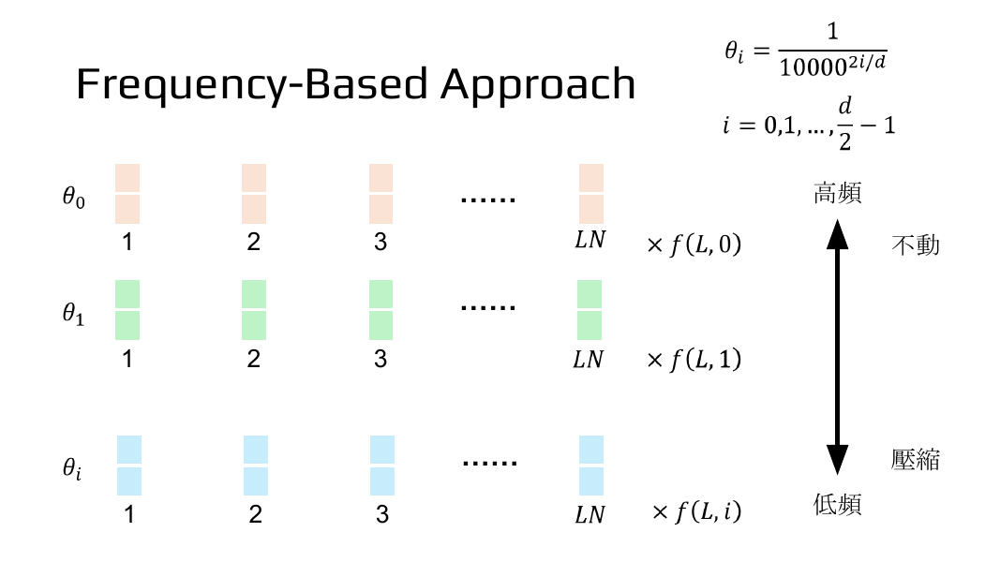
口述 68:00–69:00：RoPE 两维一组（θ0、θ1……θi，i 从 0 到 d/2−1），但 position interpolation 对所有维度做同样处理。Frequency-based 的想法是不同维度不同处理：不再单纯除以 L，而是乘上一个既跟扩展倍数 L 有关、又跟维度 i 有关的函数 F。θ0 是高频、转得非常快，i 编号越大越低频；高频的可以不改位置，低频的才需要压缩。
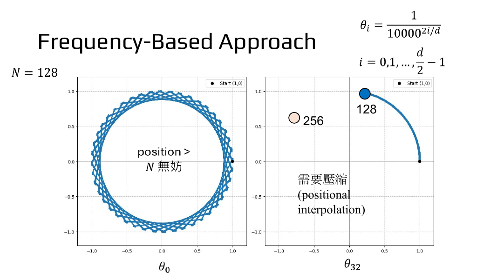
口述 70:01–71:02：RoPE 每两维也是一根指针。训练时 N 设 128，θ0 的前两维转得很快，每 6 点多个位置就转一圈，圈上每个位置可能都见过，所以给它大于 N 的位置也没关系；θ32 转得很慢，训练时最多转到一段区间，推理给 256 就坏了。所以高频的指针可以随便转，低频的不行——这就是 frequency-based 的精神，变形很多，比较知名的是 NTK-aware scaling。
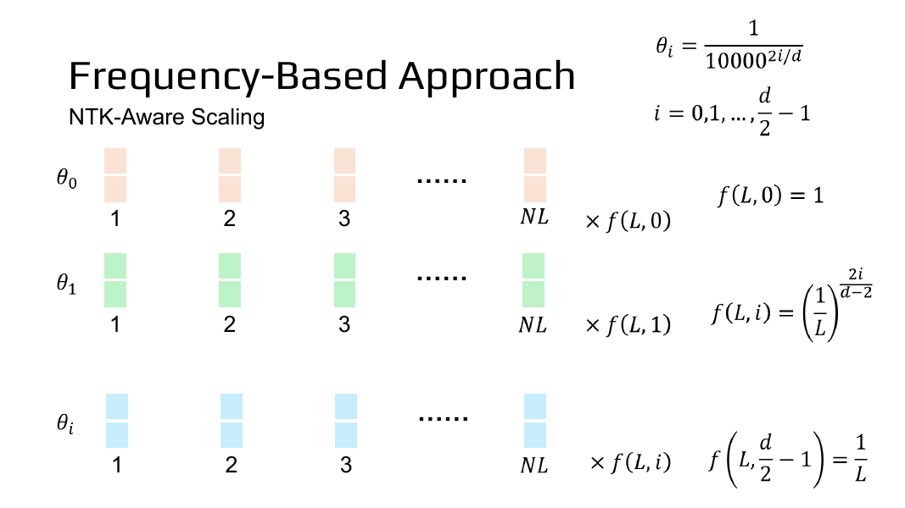
口述 71:02–73:01：F(L, i) 是 1/L 的 2i/(d−2) 次方，看起来复杂但有道理：i 等于 0（最高频）时 F 等于 1，完全不动；i 等于 d/2−1（最低频）时就是 1/L，等于原来的 位置内插，确保各种角度都是训练时见过的。（字幕先说「把 i 设成 1」随即改成「i 等于 0」。）
口述 73:01–74:00：有趣的是 NTK-aware scaling 没有对应的 paper，出自一篇 Reddit 文章，后人也就引用它。实验用 LLaMA 7B，训练长度 2048；原模型不做处理，过了 2048 很快崩解。原论文的 位置内插 主要实验有 fine-tune；不 fine-tune 时把 scale（就是 L）设成 4、从 2048 扩到 2048 乘以 4，模型没有很快坏掉，但表现不好，连本来能处理的长度也处理不好。
口述 75:01：NTK-aware scaling 同样不 fine-tune，但不同频率给不同处理，就能得到比较好的结果。另一个知名变形是 YaRN（Yet Another RoPE Extension Method）。
口述 75:01–76:00：图设 L 等于 2，横轴不同频率、纵轴 Scaling Factor。原来的 位置内插（PI）固定设 0.5；RoPE NTK 最高频不动是 1，最低频用 PI 是 0.5；YaRN 是黄线，保留较多高频维度不变、较多低频维度跟 PI 一样，结果更好，是今天蛮常用的方法。另一个想法是 dynamic scaling：PI 训练看 4 个 Token、测试最长 8 个，就改成每 0.5 跳一格。
口述 77:02：但使用时序列长短不一，短序列也用这种特殊位置，会比原模型还差，因为训练时看的是原来的位置。所以那些方法的副作用是：长的能做了，本来能处理的短的反而变差。dynamic scaling 的想法是推理时不同长度用不同方式：训练最长是 4，进来正好 4 个就用原来的位置。
口述 78:00–79:01：5 个 Token 就把位置 1 到 5 乘以 5 分之 4，6 个就乘 6 分之 4，确保最大位置仍是 4，动态决定怎么内插；比训练长度短的序列表现跟训练时一样好。讲者请大家想为什么它不常用——真正原因是它会破坏 KV Cache 的好处，相容程度不够好。另一种设计是前面用正常位置、超过某个 threshold 才开始内插，设计方式非常多；它的起源也是一篇 Reddit 文章，文中的原模型跑到 2048 以后就坏掉。
口述 80:02–81:00：NTK 不 fine-tune 也有不错的表现，展延到 2 倍、4 倍各是一条线，但短序列也变差。dynamic scaling 可以套到不同方法上：dynamic linear 是 dynamic scaling 加 位置内插（绿线），dynamic 加 NTK 是橙线，确保短序列跟原来一样好，长序列也能做。frequency-based 和 dynamic 可以结合，但要定函数 F、决定从哪里开始内插，很复杂。
口述 81:00–82:02：LongRoPE 用 evolutionary search 搜出最好的 frequency-based 和 dynamic scaling 设定，能把输入长度做到 2000K，也就是两个 million——讲者说整套哈利波特全集读进来都还有剩。论文拿 YaRN 当 baseline，LongRoPE 的两条线一直到很长都不坏。它的做法是先做一点 fine-tune 延长到某个地步，再用 LongRoPE 延长一次、两次，才做到两个 million 的 Token；论文很复杂，留给大家自己看。
训练时需要它，训练到一定程度再丢掉
口述 82:02–84:00：灵魂叩问：真的需要 位置编码 吗？一开始说没有它就分不出猫吃鱼和鱼吃猫，那是只考虑第一层。language model 的 attention 只看左边。输入「猫吃鱼吗」，第二个位置得到综合猫和吃的 Embedding（猫在吃东西），另一句同位置是鱼和吃。所以下一层的输入已经不一样：最右边位置一边看到「猫在吃东西」，另一边看到「鱼在吃东西」，做完 attention 后不会一样。
口述 84:00–86:01：所以就算没有 位置编码，Self-attention 也有位置信息——讲者说「听了一个多小时的课白忙一场」。NoPE 是 2023 年的文章，训练 Transformer 做一些 toy 任务，纵轴正确率、灰色是训练时见过的长度；比较 Sinusoidal、RoPE、ALiBi、T5 和 NoPE（紫线）。最简单的 copy 任务，只教模型 copy 长度 22 的序列，各种 位置编码 在更长时都不约而同坏掉，没有 位置编码 的反而最好、能延伸到更长。
口述 86:01–88:01：那为什么主流模型仍有 位置编码？一篇去年年底的文章比较 RoPE 和 NoPE 的训练过程（横轴参数更新次数、纵轴 loss），NoPE 在训练时就比不上：Self-attention 虽能取得位置信息，不明确给它就学不到 RoPE 那么好。所以需要它是为了训练。DroPE 的想法是一开始用 RoPE 训练，快结束时把它拔掉，loss 突然暴冲，但很快降回和 RoPE 一样低。
口述 88:01–89:01：DroPE 比 RoPE 加 YaRN 还好：纵轴正确率，横轴序列长度，RoPE 加 YaRN 超过训练见过的长度就变差，DroPE 本身没有 位置编码，反而能处理更长的序列。讲者引《金刚经》「汝等比丘，知我说法如筏喻者，法尚应舍，何况非法」：佛法像一条船，载我们到对岸后就要放下；位置编码 也一样，训练时帮助模型，训练到一定程度丢掉，反而没有限制、能看更长的序列。